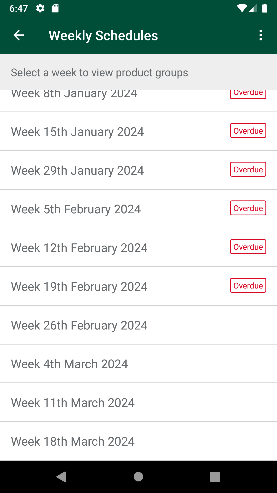
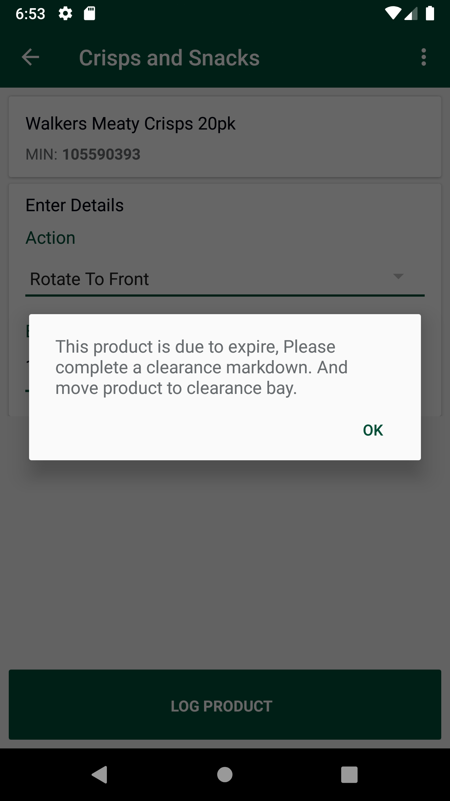
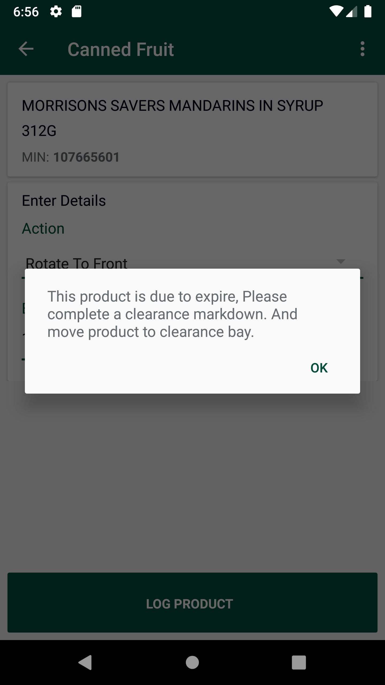
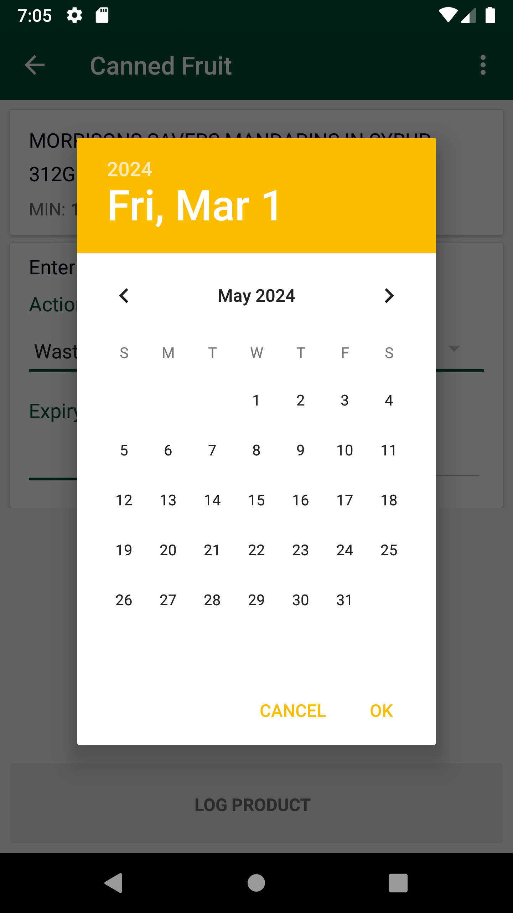
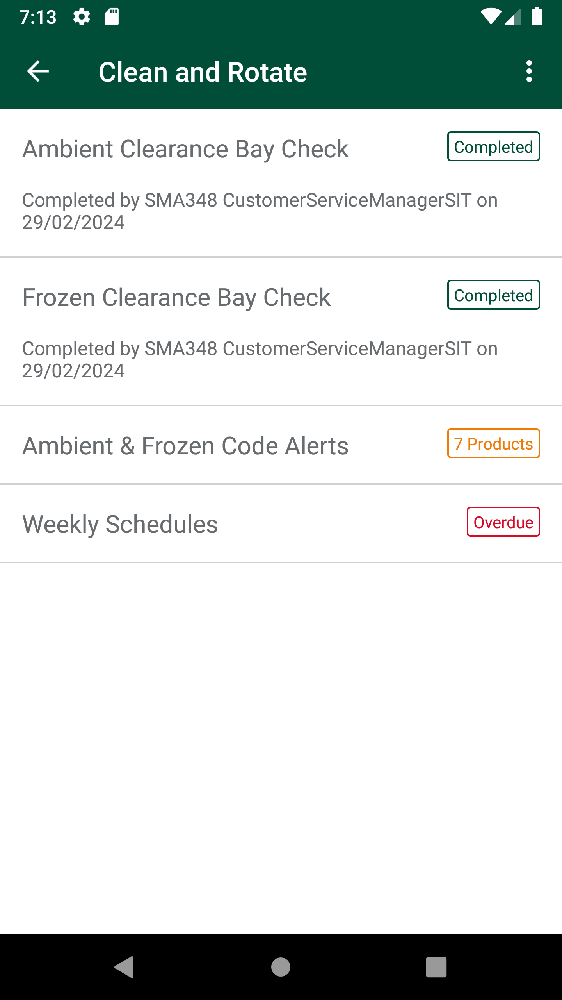
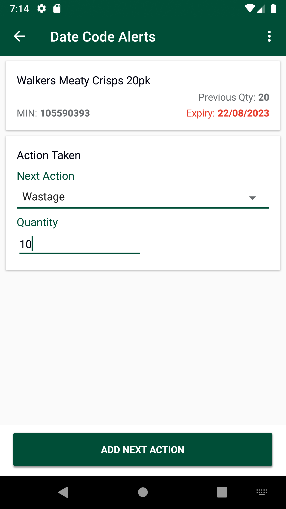

-
Verify Clean and Rotate functionality
4:54:25 PM / 00:31:11:650 Fail
Verify Clean and Rotate functionality
02.29.2024 4:54:25 PM 02.29.2024 5:25:37 PM 00:31:11:650 · #test-id=1@CleanAndRotatePassTO CHANGE THE DEVICE TIMINGS AS REQUIREDPassTO CHANGE THE DEVICE TIMINGS AS REQUIREDGiven I send the time "6" and mins "45" and meridiem "am" and current date in listThen I Change timeFailLog product with Action -> WastageFailLog product with Action -> WastageWhen I enter Username and Password for SMA Manager userAnd I click on login button for SMAAnd I Get Department Name for "Non-Crisp" type deptAnd I Get "First" Product Min for "Non-Crisp" departmentThen I click on dynamic "sLocatorName" "Code Checking" on page 'BaseClass'Then I click on dynamic "sLocatorName" "Ambient Clean & Rotate" on page 'BaseClass'And I Get Weekly Schedules Submenus statusThen I click on "Weekly Schedules" on Clean and Rotate PageAnd I Get First Weekly schedule statusThen I Verify Weekly schedule Submenu status is same as First Weekly Schedule status inside week scheduleThen I Scroll down on Weekly schedule pageAnd I Verify for "Current Week" schedule status is ""Given request is made to capture access token and post endpoint for user v2 for "" Then I Verify the Response Code for the following "- " is 200
And I get the field value for the field "access_token"And Get the generated Access Tocken for SMA app Login ServiceWhen I get the schedule details through APIcom.morrisons.common.action.Hook.afterScenario(io.cucumber.java.Scenario)
And I verify Weekly Schedule status is same on UI and GetSchedule ServiceStep skippedAnd I Select Weekly schedule for "Current Week"Step skippedThen I get the department details through APIStep skippedThen I Verify Department pageStep skippedThen I Verify Department status is "ToStart"Step skippedAnd I verify Department status is same on UI and APIStep skippedAnd I Select DepartmentStep skippedAnd I Click on Complete Code Rotate Group buttonStep skippedThen I Verify Department status is "Completed"Step skippedThen I Verify Department Completion MessageStep skippedAnd I Select DepartmentStep skippedThen I Click on Reopen code rotate group buttonStep skippedAnd Verify "Reopen Department" alert is displayedStep skippedThen I should get a Message saying "Are you sure you want to open the completed check for this department?" and should be able to click the "YES" ButtonStep skippedAnd I Enter Product Min and click on searchStep skippedThen I select "Wastage" Action on Action log pageStep skippedAnd I Select Current Date in CalendarStep skippedAnd I enter the quantity as "10" in Quantity textboxStep skippedThen I click on Log Product button on Action log pageStep skippedThen I verify Quantity check message is displayedStep skippedAnd I click on cancel on AlertStep skippedAnd I enter the quantity as "90" in Quantity textboxStep skippedThen I click on Log Product button on Action log pageStep skippedThen I verify Quantity check message is displayedStep skippedAnd I click on cancel on AlertStep skippedAnd I enter the quantity as "20" in Quantity textboxStep skippedThen I click on Log Product button on Action log pageStep skippedThen I verify Quantity check message is displayedStep skippedThen I confirm the alertStep skippedAnd I Verify Wastage reason Alert Title and MessageStep skippedThen I select "Waste - Damaged" Action on Wastage Reason alert and click on ConfirmStep skippedThen I Verify product is logged with "Wasted" actionStep skippedAnd I Enter Product Min and click on searchStep skippedThen I select "Wastage" Action on Action log pageStep skippedAnd I Select Current Date in CalendarStep skippedAnd I enter the quantity as "10" in Quantity textboxStep skippedThen I click on Log Product button on Action log pageStep skippedThen I verify Quantity check message is displayedStep skippedAnd I click on cancel on AlertStep skippedAnd I enter the quantity as "90" in Quantity textboxStep skippedThen I click on Log Product button on Action log pageStep skippedThen I verify Quantity check message is displayedStep skippedAnd I click on cancel on AlertStep skippedAnd I enter the quantity as "20" in Quantity textboxStep skippedThen I click on Log Product button on Action log pageStep skippedThen I verify Quantity check message is displayedStep skippedThen I confirm the alertStep skippedAnd I Verify Wastage reason Alert Title and MessageStep skippedThen I select "Waste - Out of Date" Action on Wastage Reason alert and click on ConfirmStep skippedThen I Verify product is logged with "Wasted" actionStep skippedThen I get action and quantity on UIStep skippedWhen I get the item details through APIStep skippedAnd I verify Action and quantity on UI and service is sameStep skippedAnd I Get "Second" Product Min for "Non-Crisp" departmentStep skippedAnd I Enter Product Min and click on searchStep skippedThen I select "Wastage" Action on Action log pageStep skippedAnd I Select Current Date in CalendarStep skippedAnd I enter the quantity as "10" in Quantity textboxStep skippedThen I click on Log Product button on Action log pageStep skippedThen I verify Quantity check message is displayedStep skippedAnd I click on cancel on AlertStep skippedAnd I enter the quantity as "90" in Quantity textboxStep skippedThen I click on Log Product button on Action log pageStep skippedThen I verify Quantity check message is displayedStep skippedAnd I click on cancel on AlertStep skippedAnd I enter the quantity as "20" in Quantity textboxStep skippedThen I click on Log Product button on Action log pageStep skippedThen I verify Quantity check message is displayedStep skippedThen I confirm the alertStep skippedAnd I Verify Wastage reason Alert Title and MessageStep skippedThen I select "Charity - Damaged" Action on Wastage Reason alert and click on ConfirmStep skippedThen I Verify product is logged with "Wasted" actionStep skippedThen I get action and quantity on UIStep skippedWhen I get the item details through APIStep skippedAnd I verify Action and quantity on UI and service is sameStep skippedAnd I click on View listStep skippedAnd I Verify the latest scanned Product Min is visible at the topStep skippedThen I Swipe left on View list screenStep skippedAnd I Verify Delete button is "Disabled"Step skippedThen I click on "Back" buttonStep skippedAnd I Enter Product Min and click on searchStep skippedThen I select "Wastage" Action on Action log pageStep skippedAnd I Select Current Date plus 2 date in CalendarStep skippedAnd I enter the quantity as "10" in Quantity textboxStep skippedThen I click on Log Product button on Action log pageStep skippedThen I verify Quantity check message is displayedStep skippedAnd I click on cancel on AlertStep skippedAnd I enter the quantity as "90" in Quantity textboxStep skippedThen I click on Log Product button on Action log pageStep skippedThen I verify Quantity check message is displayedStep skippedAnd I click on cancel on AlertStep skippedAnd I enter the quantity as "20" in Quantity textboxStep skippedThen I click on Log Product button on Action log pageStep skippedThen I verify Quantity check message is displayedStep skippedThen I confirm the alertStep skippedAnd I Verify Wastage reason Alert Title and MessageStep skippedThen I select "Charity - Out of Date" Action on Wastage Reason alert and click on ConfirmStep skippedThen I Verify product is logged with "Wasted" actionStep skippedThen I get action and quantity on UIStep skippedWhen I get the item details through APIStep skippedAnd I verify Action and quantity on UI and service is sameStep skippedAnd I click on View listStep skippedAnd I Click on Complete Code Rotate Group buttonStep skippedThen I Verify Department status is "Completed"Step skippedAnd I Select DepartmentStep skippedThen I Click on Reopen code rotate group buttonStep skippedAnd Verify "Reopen Department" alert is displayedStep skippedThen I should get a Message saying "Are you sure you want to open the completed check for this department?" and should be able to click the "YES" ButtonStep skippedPassLog product with Action - Rotate to front.PassLog product with Action - Rotate to front.When I enter Username and Password for SMA Manager userAnd I click on login button for SMAAnd I Get Department Name for "Non-Crisp" type deptAnd I Get "First" Product Min for "Non-Crisp" departmentThen I click on dynamic "sLocatorName" "Code Checking" on page 'BaseClass'Then I click on dynamic "sLocatorName" "Ambient Clean & Rotate" on page 'BaseClass'Then I click on "Weekly Schedules" on Clean and Rotate PageThen I Scroll down on Weekly schedule pageAnd I Select Weekly schedule for "Current Week"Then I Verify Department pageAnd I Select DepartmentThen I Verify Department details pageAnd I Enter Product Min and click on searchThen I select "Rotate To Front" Action on Action log pageAnd I Select Current Date plus 29 date in CalendarAnd I enter the quantity as "10" in Quantity textboxThen I click on Log Product button on Action log pageThen I Verify product is logged with "Rotated" actionThen I get action and quantity on UIGiven request is made to capture access token and post endpoint for user v2 for "" Then I Verify the Response Code for the following "- " is 200
And I get the field value for the field "access_token"And Get the generated Access Tocken for SMA app Login ServiceThen I get the department details through APIWhen I get the item details through APIAnd I verify Action and quantity on UI and service is sameThen I click on "Back" buttonThen I Verify Department status is "In Progress"Then I verify Department status is same on UI and APIFailFor Crisp Department, verify Markdown and Clearance alert functionality.FailFor Crisp Department, verify Markdown and Clearance alert functionality.When I enter Username and Password for SMA Manager userAnd I click on login button for SMAAnd I Get Department Name for "Crisp" type deptAnd I Get "First" Product Min for "Crisp" departmentThen I click on dynamic "sLocatorName" "Code Checking" on page 'BaseClass'Then I click on dynamic "sLocatorName" "Ambient Clean & Rotate" on page 'BaseClass'Then I click on "Weekly Schedules" on Clean and Rotate PageThen I Scroll down on Weekly schedule pageAnd I Select Weekly schedule for "Overdue Week"And I Select DepartmentAnd I Enter Product Min and click on searchThen I select "Rotate To Front" Action on Action log pageAnd I Select Current Date plus 14 date in CalendarAnd I enter the quantity as "10" in Quantity textboxThen I click on Log Product button on Action log pageAnd I verify 1st Markdown alert pop-up is not displayedcom.morrisons.common.action.Hook.afterScenario(io.cucumber.java.Scenario)
Then I Verify product is logged with "Rotated" actionStep skippedAnd I Enter Product Min and click on searchStep skippedThen I select "Rotate To Front" Action on Action log pageStep skippedAnd I Select Current Date plus 21 date in CalendarStep skippedAnd I enter the quantity as "10" in Quantity textboxStep skippedThen I click on Log Product button on Action log pageStep skippedAnd I verify 1st Markdown alert pop-up is not displayedStep skippedThen I Verify product is logged with "Rotated" actionStep skippedAnd I Enter Product Min and click on searchStep skippedThen I select "Rotate To Front" Action on Action log pageStep skippedAnd I Select Current Date plus 2 date in CalendarStep skippedAnd I enter the quantity as "10" in Quantity textboxStep skippedThen I click on Log Product button on Action log pageStep skippedAnd I verify Clearance Markdown alert popup with "This product is due to expire, Please complete a clearance markdown. And move product to clearance bay." is displayedStep skippedThen I click on "Back" buttonStep skippedAnd I Enter Product Min and click on searchStep skippedThen I select "Rotate To Front" Action on Action log pageStep skippedAnd I Select Current Date plus 12 date in CalendarStep skippedAnd I enter the quantity as "10" in Quantity textboxStep skippedThen I click on Log Product button on Action log pageStep skippedAnd I verify Clearance Markdown alert popup with "This product is due to expire, Please complete a clearance markdown. And move product to clearance bay." is displayedStep skippedThen I click on "Back" buttonStep skippedThen I click on "Back" buttonStep skippedThen I click on "Back" buttonStep skippedThen I Scroll down on Weekly schedule pageStep skippedAnd I Select Weekly schedule for "Current Week"Step skippedAnd I Select DepartmentStep skippedAnd I Enter Product Min and click on searchStep skippedThen I select "Rotate To Front" Action on Action log pageStep skippedAnd I Select Current Date plus 14 date in CalendarStep skippedAnd I enter the quantity as "10" in Quantity textboxStep skippedThen I click on Log Product button on Action log pageStep skippedAnd I verify 1st Markdown alert pop-up is not displayedStep skippedThen I Verify product is logged with "Rotated" actionStep skippedAnd I Enter Product Min and click on searchStep skippedThen I select "Rotate To Front" Action on Action log pageStep skippedAnd I Select Current Date plus 21 date in CalendarStep skippedAnd I enter the quantity as "10" in Quantity textboxStep skippedThen I click on Log Product button on Action log pageStep skippedAnd I verify 1st Markdown alert pop-up is not displayedStep skippedThen I Verify product is logged with "Rotated" actionStep skippedAnd I Enter Product Min and click on searchStep skippedThen I select "Rotate To Front" Action on Action log pageStep skippedAnd I Select Current Date plus 2 date in CalendarStep skippedAnd I enter the quantity as "10" in Quantity textboxStep skippedThen I click on Log Product button on Action log pageStep skippedAnd I verify Clearance Markdown alert popup with "This product is due to expire, Please complete a clearance markdown. And move product to clearance bay." is displayedStep skippedThen I click on "Back" buttonStep skippedAnd I Enter Product Min and click on searchStep skippedThen I select "Rotate To Front" Action on Action log pageStep skippedAnd I Select Current Date plus 12 date in CalendarStep skippedAnd I enter the quantity as "10" in Quantity textboxStep skippedThen I click on Log Product button on Action log pageStep skippedAnd I verify Clearance Markdown alert popup with "This product is due to expire, Please complete a clearance markdown. And move product to clearance bay." is displayedStep skippedThen I click on "Back" buttonStep skippedFailFor Non-Crisp Department, verify Markdown and Clearance alert functionality.FailFor Non-Crisp Department, verify Markdown and Clearance alert functionality.When I enter Username and Password for SMA Manager userAnd I click on login button for SMAAnd I Get Department Name for "Non-Crisp" type deptAnd I Get "First" Product Min for "Non-Crisp" departmentThen I click on dynamic "sLocatorName" "Code Checking" on page 'BaseClass'Then I click on dynamic "sLocatorName" "Ambient Clean & Rotate" on page 'BaseClass'Then I click on "Weekly Schedules" on Clean and Rotate PageThen I Scroll down on Weekly schedule pageAnd I Select Weekly schedule for "Overdue Week"And I Select DepartmentAnd I Enter Product Min and click on searchThen I select "Rotate To Front" Action on Action log pageAnd I Select Current Date plus 14 date in CalendarAnd I enter the quantity as "10" in Quantity textboxThen I click on Log Product button on Action log pageAnd I verify 1st Markdown alert popup with "This product expires soon, Please complete a markdown." is displayedcom.morrisons.common.action.Hook.afterScenario(io.cucumber.java.Scenario)
Then I click on "Back" buttonStep skippedAnd I Enter Product Min and click on searchStep skippedThen I select "Rotate To Front" Action on Action log pageStep skippedAnd I Select Current Date plus 21 date in CalendarStep skippedAnd I enter the quantity as "10" in Quantity textboxStep skippedThen I click on Log Product button on Action log pageStep skippedAnd I verify 1st Markdown alert popup with "This product expires soon, Please complete a markdown." is displayedStep skippedThen I click on "Back" buttonStep skippedAnd I Enter Product Min and click on searchStep skippedThen I select "Rotate To Front" Action on Action log pageStep skippedAnd I Select Current Date plus 2 date in CalendarStep skippedAnd I enter the quantity as "10" in Quantity textboxStep skippedThen I click on Log Product button on Action log pageStep skippedAnd I verify Clearance Markdown alert popup with "This product is due to expire, Please complete a clearance markdown. And move product to clearance bay." is displayedStep skippedThen I click on "Back" buttonStep skippedAnd I Enter Product Min and click on searchStep skippedThen I select "Rotate To Front" Action on Action log pageStep skippedAnd I Select Current Date plus 12 date in CalendarStep skippedAnd I enter the quantity as "10" in Quantity textboxStep skippedThen I click on Log Product button on Action log pageStep skippedAnd I verify Clearance Markdown alert popup with "This product is due to expire, Please complete a clearance markdown. And move product to clearance bay." is displayedStep skippedThen I click on "Back" buttonStep skippedThen I click on "Back" buttonStep skippedThen I click on "Back" buttonStep skippedThen I Scroll down on Weekly schedule pageStep skippedAnd I Select Weekly schedule for "Current Week"Step skippedAnd I Select DepartmentStep skippedAnd I Enter Product Min and click on searchStep skippedThen I select "Rotate To Front" Action on Action log pageStep skippedAnd I Select Current Date plus 14 date in CalendarStep skippedAnd I enter the quantity as "10" in Quantity textboxStep skippedThen I click on Log Product button on Action log pageStep skippedAnd I verify 1st Markdown alert popup with "This product expires soon, Please complete a markdown." is displayedStep skippedThen I click on "Back" buttonStep skippedAnd I Enter Product Min and click on searchStep skippedThen I select "Rotate To Front" Action on Action log pageStep skippedAnd I Select Current Date plus 21 date in CalendarStep skippedAnd I enter the quantity as "10" in Quantity textboxStep skippedThen I click on Log Product button on Action log pageStep skippedAnd I verify 1st Markdown alert popup with "This product expires soon, Please complete a markdown." is displayedStep skippedThen I click on "Back" buttonStep skippedAnd I Enter Product Min and click on searchStep skippedThen I select "Rotate To Front" Action on Action log pageStep skippedAnd I Select Current Date plus 2 date in CalendarStep skippedAnd I enter the quantity as "10" in Quantity textboxStep skippedThen I click on Log Product button on Action log pageStep skippedAnd I verify Clearance Markdown alert popup with "This product is due to expire, Please complete a clearance markdown. And move product to clearance bay." is displayedStep skippedThen I click on "Back" buttonStep skippedAnd I Enter Product Min and click on searchStep skippedThen I select "Rotate To Front" Action on Action log pageStep skippedAnd I Select Current Date plus 12 date in CalendarStep skippedAnd I enter the quantity as "10" in Quantity textboxStep skippedThen I click on Log Product button on Action log pageStep skippedAnd I verify Clearance Markdown alert popup with "This product is due to expire, Please complete a clearance markdown. And move product to clearance bay." is displayedStep skippedThen I click on "Back" buttonStep skippedPassVerify Instruction Messages on Ambient Clearance Bay Page and Frozen Clearance Bay Check PageWhen I enter Username and Password for SMA Manager userAnd I click on login button for SMAAnd I Get Department Name for "Non-Crisp" type deptAnd I Get "First" Product Min for "Non-Crisp" departmentThen I click on dynamic "sLocatorName" "Code Checking" on page 'BaseClass'Then I click on dynamic "sLocatorName" "Ambient Clean & Rotate" on page 'BaseClass'Then I click on "Ambient Clearance Bay Check" on Clean and Rotate PageThen I verify Instruction Message on Ambient Clearance Bay Check pageAnd I click on Confirm Clearance Bay Check button on Ambient Clearance Bay Check pageThen I click on "Frozen Clearance Bay Check" on Clean and Rotate PageThen I verify Instruction Message on Frozen Clearance Bay Check PageAnd I click on Confirm Clearance Bay Check button on Frozen Clearance Bay Check PagePassVerify User is able to navigate to any page from any Hotkeys menu on top rightWhen I enter Username and Password for SMA Collegue userAnd I click on login button for SMAThen I click on 'stockMngmtText' on page 'HomePagePO_New'Then I click on 'ScheduledCounts' on page 'HomePagePO_New'And I click on hotkeys optionThen I verify option "Stock Adjustments" is available in hotkeysThen I click on option "Stock Adjustments" from hotkeysAnd I verify Stock Adjustment page is displayedThen I click on "Action Waste" on Stock Adjustment PageThen I click on "Back" buttonThen I click on "Transfer Stock To A Dept" on Stock Adjustment PageThen I click on "Back" buttonThen I click on "Transfer Back From A Dept" on Stock Adjustment PageThen I click on "Back" buttonThen I click on "Other Adjustments" on Stock Adjustment PageThen I click on "Back" buttonThen I click on "Store To Store Transfer" on Stock Adjustment PageThen I click on "Back" buttonThen I click on "Back" buttonThen I click on "Back" buttonThen I click on "Back" buttonThen I click on dynamic "sLocatorName" "Code Checking" on page 'BaseClass'Then I click on dynamic "sLocatorName" "Ambient Clean & Rotate" on page 'BaseClass'Then I click on 'hotKeyOption' on page 'BaseClass'And I click on hotkeys optionThen I verify option "Stock Information" is available in hotkeysThen I click on option "Stock Information" from hotkeysAnd I verify Stock Information page is displayedThen I click on "Back" buttonThen I click on "Back" buttonThen I click on "Back" buttonThen I click on 'stockMngmtText' on page 'HomePagePO_New'Then I click on "Shop Floor - Gap Scan"And I click on hotkeys optionThen I click on option "Markdowns" from hotkeysAnd I verify Markdowns page is displayedThen I click on "Back" buttonThen I click on "Back" buttonThen I click on "Back" buttonThen I click on dynamic "sLocatorName" "Code Checking" on page 'BaseClass'Then I click on "Fresh Code Check" on Home PageAnd I click on hotkeys optionThen I click on option "Main Menu" from hotkeysThen I click on "Stock Information" on Home PageAnd I click on hotkeys optionThen I click on option "Main Menu" from hotkeysThen I click on "Stock Adjustments" on Home PageAnd I click on hotkeys optionThen I click on option "Main Menu" from hotkeysPassVerify alerts for Next-To-Future week and Next-to-Next-Future weekPassVerify alerts for Next-To-Future week and Next-to-Next-Future weekWhen I enter Username and Password for SMA Manager userAnd I click on login button for SMAAnd I Get Department Name for "Crisp" type deptAnd I Get "First" Product Min for "Crisp" departmentThen I click on dynamic "sLocatorName" "Code Checking" on page 'BaseClass'Then I click on dynamic "sLocatorName" "Ambient Clean & Rotate" on page 'BaseClass'Then I click on "Weekly Schedules" on Clean and Rotate PageThen I Scroll down on Weekly schedule pageAnd I Select Weekly schedule for "NextToFutureWeek"And I Select DepartmentAnd I verify Currently unavailable alert with "Products cannot be captured until one week before the start date." is displayedThen I click on "Back" buttonThen I Scroll down on Weekly schedule pageAnd I Select Weekly schedule for "NextToNextFutureWeek"And I Select DepartmentAnd I verify Currently unavailable alert with "Products cannot be captured until one week before the start date." is displayedFailVerify for Wastage action and past expiry_date,Wastage alert pop-up should be displayed with 2 options "Waste - Out of Date " and "Charity - Out of Date"FailVerify for Wastage action and past expiry_date,Wastage alert pop-up should be displayed with 2 options "Waste - Out of Date " and "Charity - Out of Date"When I enter Username and Password for SMA Manager userAnd I click on login button for SMAAnd I Get Department Name for "Non-Crisp" type deptAnd I Get "First" Product Min for "Non-Crisp" departmentThen I click on dynamic "sLocatorName" "Code Checking" on page 'BaseClass'Then I click on dynamic "sLocatorName" "Ambient Clean & Rotate" on page 'BaseClass'Then I click on "Weekly Schedules" on Clean and Rotate PageThen I Scroll down on Weekly schedule pageAnd I Select Weekly schedule for "Current Week"And I Select DepartmentAnd I Enter Product Min and click on searchThen I select "Wastage" Action on Action log pageAnd I Select Current Date plus -1 date in Calendarcom.morrisons.common.action.Hook.afterScenario(io.cucumber.java.Scenario)
And I enter the quantity as "9" in Quantity textboxStep skippedThen I click on Log Product button on Action log pageStep skippedAnd I Verify Wastage reason Alert Title and MessageStep skippedThen I verify "Waste - Out of Date" Action on Wastage Reason alertStep skippedThen I verify "Charity - Out of Date" Action on Wastage Reason alertStep skippedFailVerify status "Awaiting Signoff" is displayed after completion of Code Rotate Group for all the departments.Also verify Collegue user can not sign-off but Manager user can sign-off.When I enter Username and Password for SMA Collegue userAnd I click on login button for SMAThen I click on dynamic "sLocatorName" "Code Checking" on page 'BaseClass'Then I click on dynamic "sLocatorName" "Ambient Clean & Rotate" on page 'BaseClass'Then I click on "Weekly Schedules" on Clean and Rotate PageThen I Scroll down on Weekly schedule pageAnd I Select Weekly schedule for "Current Week"And I complete code rotate for the departmentsThen I Verify Sign off Code Rotate button is getting displayedAnd I verify Sign off code rotate button is not enabledThen I click on "Back" buttonThen I Scroll down on Weekly schedule pageThen I Verify for "Current Week" schedule status is "Awaiting Sign-Off"Then I logout of the systemWhen I enter Username and Password for SMA Manager userAnd I click on login button for SMAThen I click on dynamic "sLocatorName" "Code Checking" on page 'BaseClass'Then I click on dynamic "sLocatorName" "Ambient Clean & Rotate" on page 'BaseClass'Then I click on "Weekly Schedules" on Clean and Rotate PageThen I Scroll down on Weekly schedule pageAnd I Select Weekly schedule for "Current Week"Then I Verify Sign off Code Rotate button is getting displayedAnd I verify Sign off code rotate button is enabledThen I Click on Sign-Off Code Rotate buttonThen I verify Confirm Sign off Alert is displayedThen I click on Cancel button on Confirm Sign off AlertThen I click on "Back" buttonThen I Scroll down on Weekly schedule pageThen I Verify for "Current Week" schedule status is "Awaiting Sign-Off"And I Select Weekly schedule for "Current Week"Then I click on Sign-Off Code Rotate button on week pageThen I click on Confirm button on Confirm Sign off AlertThen I click on "Back" buttonThen I Scroll down on Weekly schedule pagecom.morrisons.common.action.Hook.afterScenario(io.cucumber.java.Scenario)
And I Verify Current Week is not displayed in Weekly scheduleStep skippedFailVerify Ambient and Code alert functionalityWhen I enter Username and Password for SMA Manager userAnd I click on login button for SMAThen I click on dynamic "sLocatorName" "Code Checking" on page 'BaseClass'Then I click on dynamic "sLocatorName" "Ambient Clean & Rotate" on page 'BaseClass'Then I click on "Ambient & Frozen Code Alerts" on Clean and Rotate PageAnd I click on Alert dropdownThen I select "Clearance Alerts" from the Alert dropdownAnd I verify on Product Min listAnd I click on Alert dropdownThen I select "1st Alerts" from the Alert dropdownAnd I verify on Product Min listAnd I click on Alert dropdownThen I select "All Alerts" from the Alert dropdownAnd I verify on Product Min listThen I select product on Ambient and Frozen code pageAnd I verify Product Details on Date Code alert pageAnd I enter the desired quantity "10" for productcom.morrisons.common.action.Hook.afterScenario(io.cucumber.java.Scenario)
Then I Click on Add next action button on Ambient frozen pageStep skippedThen I verify Quantity check message is displayedStep skippedAnd I click on cancel on AlertStep skippedAnd I enter the desired quantity "90" for productStep skippedThen I Click on Add next action button on Ambient frozen pageStep skippedThen I verify Quantity check message is displayedStep skippedAnd I click on cancel on AlertStep skippedAnd I enter the desired quantity "9" for productStep skippedThen I Click on Add next action button on Ambient frozen pageStep skippedAnd I verify reason code and Title on Wastage popupStep skippedThen I select the desired reason code "Waste - Out of Date" for productStep skippedThen I select product on Ambient and Frozen code pageStep skippedAnd I enter the desired quantity "10" for productStep skippedThen I Click on Add next action button on Ambient frozen pageStep skippedThen I verify Quantity check message is displayedStep skippedAnd I click on cancel on AlertStep skippedAnd I enter the desired quantity "9" for productStep skippedThen I Click on Add next action button on Ambient frozen pageStep skippedAnd I verify reason code and Title on Wastage popupStep skippedThen I select the desired reason code "Charity - Out of Date" for productStep skippedThen I select product on Ambient and Frozen code pageStep skippedThen I click on Action Spinner and select "No further action – Stock sold" ActionStep skippedAnd I verify Quantity input box is disabledStep skippedThen I Click on Add next action button on Ambient frozen pageStep skipped
-
org.openqa.selenium.WebDriverException
1 tests
org.openqa.selenium.WebDriverException
1 failedStatus Timestamp TestName Fail 17:25:32 PM And I enter the desired quantity "10" for product Verify Clean and Rotate functionality.Verify Ambient and Code alert functionality.And I enter the desired quantity "10" for product -
org.json.JSONException
1 tests
org.json.JSONException
1 failedStatus Timestamp TestName Fail 16:58:25 PM When I get the schedule details through API Verify Clean and Rotate functionality.Log product with Action -> Wastage.When I get the schedule details through API -
org.openqa.selenium.NoSuchElementException
1 tests
org.openqa.selenium.NoSuchElementException
1 failedStatus Timestamp TestName Fail 17:14:06 PM And I Select Current Date plus -1 date in Calendar Verify Clean and Rotate functionality.Verify for Wastage action and past expiry_date,Wastage alert pop-up should be displayed with 2 options "Waste - Out of Date " and "Charity - Out of Date".And I Select Current Date plus -1 date in Calendar -
java.lang.AssertionError
2 tests
java.lang.AssertionError
2 failedStatus Timestamp TestName Fail 17:04:43 PM And I verify 1st Markdown alert pop-up is not displayed Verify Clean and Rotate functionality.For Crisp Department, verify Markdown and Clearance alert functionality..And I verify 1st Markdown alert pop-up is not displayedFail 17:07:29 PM And I verify 1st Markdown alert popup with "This product expires soon, Please complete a markdown." is displayed Verify Clean and Rotate functionality.For Non-Crisp Department, verify Markdown and Clearance alert functionality..And I verify 1st Markdown alert popup with "This product expires soon, Please complete a markdown." is displayed -
java.lang.IndexOutOfBoundsException
1 tests
java.lang.IndexOutOfBoundsException
1 failedStatus Timestamp TestName Fail 17:22:38 PM Then I Scroll down on Weekly schedule page Verify Clean and Rotate functionality.Verify status "Awaiting Signoff" is displayed after completion of Code Rotate Group for all the departments.Also verify Collegue user can not sign-off but Manager user can sign-off..Then I Scroll down on Weekly schedule page
-
@VerfInstrMsg
1 tests
@VerfInstrMsg
1 passedStatus Timestamp TestName Pass 17:07:31 PM Verify Instruction Messages on Ambient Clearance Bay Page and Frozen Clearance Bay Check Page Verify Clean and Rotate functionality.Verify Instruction Messages on Ambient Clearance Bay Page and Frozen Clearance Bay Check Page -
@VerfCrispMardwn&ClearanceAlert
2 tests
@VerfCrispMardwn&ClearanceAlert
2 failedStatus Timestamp TestName Fail 17:02:05 PM For Crisp Department, verify Markdown and Clearance alert functionality. Verify Clean and Rotate functionality.For Crisp Department, verify Markdown and Clearance alert functionality.Fail 17:02:05 PM For Crisp Department, verify Markdown and Clearance alert functionality. Verify Clean and Rotate functionality.For Crisp Department, verify Markdown and Clearance alert functionality. -
@VerfWastageActPastExp
2 tests
@VerfWastageActPastExp
2 failedStatus Timestamp TestName Fail 17:12:36 PM Verify for Wastage action and past expiry_date,Wastage alert pop-up should be displayed with 2 options "Waste - Out of Date " and "Charity - Out of Date" Verify Clean and Rotate functionality.Verify for Wastage action and past expiry_date,Wastage alert pop-up should be displayed with 2 options "Waste - Out of Date " and "Charity - Out of Date"Fail 17:12:36 PM Verify for Wastage action and past expiry_date,Wastage alert pop-up should be displayed with 2 options "Waste - Out of Date " and "Charity - Out of Date" Verify Clean and Rotate functionality.Verify for Wastage action and past expiry_date,Wastage alert pop-up should be displayed with 2 options "Waste - Out of Date " and "Charity - Out of Date" -
@CleanAndRotate
12 tests
@CleanAndRotate
5 passed 7 failedStatus Timestamp TestName Fail 16:54:25 PM Verify Clean and Rotate functionality Pass 16:54:25 PM TO CHANGE THE DEVICE TIMINGS AS REQUIRED Verify Clean and Rotate functionality.TO CHANGE THE DEVICE TIMINGS AS REQUIREDFail 16:56:04 PM Log product with Action -> Wastage Verify Clean and Rotate functionality.Log product with Action -> WastagePass 16:58:45 PM Log product with Action - Rotate to front. Verify Clean and Rotate functionality.Log product with Action - Rotate to front.Fail 17:02:05 PM For Crisp Department, verify Markdown and Clearance alert functionality. Verify Clean and Rotate functionality.For Crisp Department, verify Markdown and Clearance alert functionality.Fail 17:04:46 PM For Non-Crisp Department, verify Markdown and Clearance alert functionality. Verify Clean and Rotate functionality.For Non-Crisp Department, verify Markdown and Clearance alert functionality.Pass 17:07:31 PM Verify Instruction Messages on Ambient Clearance Bay Page and Frozen Clearance Bay Check Page Verify Clean and Rotate functionality.Verify Instruction Messages on Ambient Clearance Bay Page and Frozen Clearance Bay Check PagePass 17:08:21 PM Verify User is able to navigate to any page from any Hotkeys menu on top right Verify Clean and Rotate functionality.Verify User is able to navigate to any page from any Hotkeys menu on top rightPass 17:10:29 PM Verify alerts for Next-To-Future week and Next-to-Next-Future week Verify Clean and Rotate functionality.Verify alerts for Next-To-Future week and Next-to-Next-Future weekFail 17:12:36 PM Verify for Wastage action and past expiry_date,Wastage alert pop-up should be displayed with 2 options "Waste - Out of Date " and "Charity - Out of Date" Verify Clean and Rotate functionality.Verify for Wastage action and past expiry_date,Wastage alert pop-up should be displayed with 2 options "Waste - Out of Date " and "Charity - Out of Date"Fail 17:16:17 PM Verify status "Awaiting Signoff" is displayed after completion of Code Rotate Group for all the departments.Also verify Collegue user can not sign-off but Manager user can sign-off. Verify Clean and Rotate functionality.Verify status "Awaiting Signoff" is displayed after completion of Code Rotate Group for all the departments.Also verify Collegue user can not sign-off but Manager user can sign-off.Fail 17:24:25 PM Verify Ambient and Code alert functionality Verify Clean and Rotate functionality.Verify Ambient and Code alert functionality -
@NavigateToAnyPageFromHK
1 tests
@NavigateToAnyPageFromHK
1 passedStatus Timestamp TestName Pass 17:08:21 PM Verify User is able to navigate to any page from any Hotkeys menu on top right Verify Clean and Rotate functionality.Verify User is able to navigate to any page from any Hotkeys menu on top right -
@VerfAmbCodeAlert
1 tests
@VerfAmbCodeAlert
1 failedStatus Timestamp TestName Fail 17:24:25 PM Verify Ambient and Code alert functionality Verify Clean and Rotate functionality.Verify Ambient and Code alert functionality -
@timeChange
2 tests
@timeChange
2 passedStatus Timestamp TestName Pass 16:54:25 PM TO CHANGE THE DEVICE TIMINGS AS REQUIRED Verify Clean and Rotate functionality.TO CHANGE THE DEVICE TIMINGS AS REQUIREDPass 16:54:25 PM TO CHANGE THE DEVICE TIMINGS AS REQUIRED Verify Clean and Rotate functionality.TO CHANGE THE DEVICE TIMINGS AS REQUIRED -
@VerfNextFutureWeek
2 tests
@VerfNextFutureWeek
2 passedStatus Timestamp TestName Pass 17:10:29 PM Verify alerts for Next-To-Future week and Next-to-Next-Future week Verify Clean and Rotate functionality.Verify alerts for Next-To-Future week and Next-to-Next-Future weekPass 17:10:29 PM Verify alerts for Next-To-Future week and Next-to-Next-Future week Verify Clean and Rotate functionality.Verify alerts for Next-To-Future week and Next-to-Next-Future week -
@NonCrispMandCAlert
2 tests
@NonCrispMandCAlert
2 failedStatus Timestamp TestName Fail 17:04:46 PM For Non-Crisp Department, verify Markdown and Clearance alert functionality. Verify Clean and Rotate functionality.For Non-Crisp Department, verify Markdown and Clearance alert functionality.Fail 17:04:46 PM For Non-Crisp Department, verify Markdown and Clearance alert functionality. Verify Clean and Rotate functionality.For Non-Crisp Department, verify Markdown and Clearance alert functionality. -
@RotateToFront
2 tests
@RotateToFront
2 passedStatus Timestamp TestName Pass 16:58:45 PM Log product with Action - Rotate to front. Verify Clean and Rotate functionality.Log product with Action - Rotate to front.Pass 16:58:45 PM Log product with Action - Rotate to front. Verify Clean and Rotate functionality.Log product with Action - Rotate to front. -
@VerfAwaitingSignOff
1 tests
@VerfAwaitingSignOff
1 failedStatus Timestamp TestName Fail 17:16:17 PM Verify status "Awaiting Signoff" is displayed after completion of Code Rotate Group for all the departments.Also verify Collegue user can not sign-off but Manager user can sign-off. Verify Clean and Rotate functionality.Verify status "Awaiting Signoff" is displayed after completion of Code Rotate Group for all the departments.Also verify Collegue user can not sign-off but Manager user can sign-off. -
@uu
2 tests
@uu
2 failedStatus Timestamp TestName Fail 16:56:04 PM Log product with Action -> Wastage Verify Clean and Rotate functionality.Log product with Action -> WastageFail 16:56:04 PM Log product with Action -> Wastage Verify Clean and Rotate functionality.Log product with Action -> Wastage -
@sma
16 tests
@sma
6 passed 10 failedStatus Timestamp TestName Fail 16:56:04 PM Log product with Action -> Wastage Verify Clean and Rotate functionality.Log product with Action -> WastageFail 16:56:04 PM Log product with Action -> Wastage Verify Clean and Rotate functionality.Log product with Action -> WastagePass 16:58:45 PM Log product with Action - Rotate to front. Verify Clean and Rotate functionality.Log product with Action - Rotate to front.Pass 16:58:45 PM Log product with Action - Rotate to front. Verify Clean and Rotate functionality.Log product with Action - Rotate to front.Fail 17:02:05 PM For Crisp Department, verify Markdown and Clearance alert functionality. Verify Clean and Rotate functionality.For Crisp Department, verify Markdown and Clearance alert functionality.Fail 17:02:05 PM For Crisp Department, verify Markdown and Clearance alert functionality. Verify Clean and Rotate functionality.For Crisp Department, verify Markdown and Clearance alert functionality.Fail 17:04:46 PM For Non-Crisp Department, verify Markdown and Clearance alert functionality. Verify Clean and Rotate functionality.For Non-Crisp Department, verify Markdown and Clearance alert functionality.Fail 17:04:46 PM For Non-Crisp Department, verify Markdown and Clearance alert functionality. Verify Clean and Rotate functionality.For Non-Crisp Department, verify Markdown and Clearance alert functionality.Pass 17:07:31 PM Verify Instruction Messages on Ambient Clearance Bay Page and Frozen Clearance Bay Check Page Verify Clean and Rotate functionality.Verify Instruction Messages on Ambient Clearance Bay Page and Frozen Clearance Bay Check PagePass 17:08:21 PM Verify User is able to navigate to any page from any Hotkeys menu on top right Verify Clean and Rotate functionality.Verify User is able to navigate to any page from any Hotkeys menu on top rightPass 17:10:29 PM Verify alerts for Next-To-Future week and Next-to-Next-Future week Verify Clean and Rotate functionality.Verify alerts for Next-To-Future week and Next-to-Next-Future weekPass 17:10:29 PM Verify alerts for Next-To-Future week and Next-to-Next-Future week Verify Clean and Rotate functionality.Verify alerts for Next-To-Future week and Next-to-Next-Future weekFail 17:12:36 PM Verify for Wastage action and past expiry_date,Wastage alert pop-up should be displayed with 2 options "Waste - Out of Date " and "Charity - Out of Date" Verify Clean and Rotate functionality.Verify for Wastage action and past expiry_date,Wastage alert pop-up should be displayed with 2 options "Waste - Out of Date " and "Charity - Out of Date"Fail 17:12:36 PM Verify for Wastage action and past expiry_date,Wastage alert pop-up should be displayed with 2 options "Waste - Out of Date " and "Charity - Out of Date" Verify Clean and Rotate functionality.Verify for Wastage action and past expiry_date,Wastage alert pop-up should be displayed with 2 options "Waste - Out of Date " and "Charity - Out of Date"Fail 17:16:17 PM Verify status "Awaiting Signoff" is displayed after completion of Code Rotate Group for all the departments.Also verify Collegue user can not sign-off but Manager user can sign-off. Verify Clean and Rotate functionality.Verify status "Awaiting Signoff" is displayed after completion of Code Rotate Group for all the departments.Also verify Collegue user can not sign-off but Manager user can sign-off.Fail 17:24:25 PM Verify Ambient and Code alert functionality Verify Clean and Rotate functionality.Verify Ambient and Code alert functionality
Started
Feb 29, 2024 04:54:21 PM
Ended
Feb 29, 2024 05:25:39 PM
Features Passed
0
Features Failed
1
Features
Scenarios
Steps
Timeline
Tags
| Name | Passed | Failed | Skipped | Others | Passed % |
|---|---|---|---|---|---|
| @VerfInstrMsg | 1 | 0 | 0 | 0 | 100% |
| @VerfCrispMardwn&ClearanceAlert | 0 | 2 | 0 | 0 | 0% |
| @VerfWastageActPastExp | 0 | 2 | 0 | 0 | 0% |
| @CleanAndRotate | 5 | 7 | 0 | 0 | 41.667% |
| @NavigateToAnyPageFromHK | 1 | 0 | 0 | 0 | 100% |
| @VerfAmbCodeAlert | 0 | 1 | 0 | 0 | 0% |
| @timeChange | 2 | 0 | 0 | 0 | 100% |
| @VerfNextFutureWeek | 2 | 0 | 0 | 0 | 100% |
| @NonCrispMandCAlert | 0 | 2 | 0 | 0 | 0% |
| @RotateToFront | 2 | 0 | 0 | 0 | 100% |
| @VerfAwaitingSignOff | 0 | 1 | 0 | 0 | 0% |
| @uu | 0 | 2 | 0 | 0 | 0% |
| @sma | 6 | 10 | 0 | 0 | 37.5% |